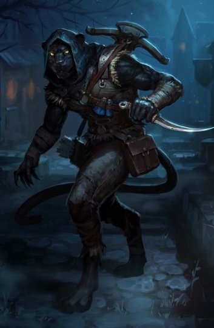

Tüm sanatı çevikliğe dayanan bir sınıftır. Gizli ve hızlı hareket etme yetenekleri, hem keselerinin boş kalmamasını, hem de düşmanlarından kolayca kurtulabilmelerini sağlar. Sınıfi içi ittifakı çok güçlü olduğundan, diyarın en güçlü ve köklü loncalarından birine sahiptirler.
Seviye 1
Hançer: Hançer kullanabilme yeteneğidir.Topuz: Topuz kullanabilme yeteneğidir.
Mızrak: Mızrak kullanabilme yeteneğidir.
Kılıç: Kılıç kullanabilme yeteneğidir.
Sıyrılma: Saldırının vuracağı noktadan ayrılma prensibine dayanan tekniktir.Hem saldıran hem de sıyrılmayı deneyen için çeviklik değeri çok önemlidir.Savaşçılar sıyrılma yeteneğinin ustalarıdırlar.(otomatik)
Pazarlık: Alışverişlerde alırken ucuza alma, satarken pahalıya satma yeteneğidir. Bu yetenek kullanılarak dükkan sahibi fiyat konusunda ikna edilmeye çalışılır. Hırsızlar pazarlık konusunda doğuştan yeteneklidirler.
(otomatik)Saklan: Gölgelerin arasına gizlenmek için kullanılır. (saklan)
Dikiz: Kurbana bakınca envanterini görebilme yeteneği.
Anımsa: Ait olduğunun dinin tapınağına dönüş komutudur. Seviye 10a kadar geçerlidir. (anımsa)
Parşömen: Parşömen okuma yeteneğidir.(oku yazdıktan sonra okunacak parşömenin adı yazılır.)
Seviye 3
Toz atma: Yerdeki tozu-kumu seri bir ayak darbesiyle havalandırarak rakibin gözlerine atmayı hedefleyen, rakibi kısa süreliğine körleştiren yetenek. (toz) Çelme: Rakibin bacaklarına hızlı bir vuruş yapılarak onu yere çalmayı amaçlayan yetenek. Başarılı bir çelmenin ardından rakip yere düşer ve 2 tur boyunca kalkamaz. Yere düşen kişinin dövüş becerisi kısmen azalır ve kaçması önlenir. İri cüsseli canlıları yere çalmak kolay olmaz, çevik canlılar ise çelme hamlesini kimi zaman kolayca savuşturabilirler. (çelme)Seviye 4
Süzül: Süzülmenin saklanmadan farkı gizlice hareket edebilmeyi gerektirmesidir. Bu nedenle süzülmek saklanmaktan çok daha zordur.Seviye 7
Çevrel: Uğruların dövüşürken kullandığı yeteneklerden birisi. Bu yeteneği kullanan uğrunun hedefle göğüs göğüse dövüşen kişi olmamasıvgerekir.Grupça yapılan saldırılarda uğru grubun arkalarına ve kenarlarına giderek kamasını bir yarım daire şeklinde hızla savurarak hedefe vurur. (çevrel)
Seviye 10
Saklı saptama: Gölgelerin içine saklananları görmeyi sağlayan yetenek.Seviye 11
Ardılan: Bu yetenek hırsızların en sevdiği saldırı yöntemidir. Bu tür saldırılar için kama veya bıçak türü deşici silahlar kullanmak gerekmektedir. Ardılan sayesinde verilen zarar, karakterin seviyesine, kama türü silahları kullanma bilgisine, ardılan bilgisine ve rakibinin gücüne bağlıdır. (ardılan)Seviye 12
Arakla: Kurbanın ceplerinden birşeyler araklama yeteneğidir. (arakla akçeSeviye 13
İrfan: Bilgelik vasıtasıyla herhangi bir eşyanın niteliklerini öğrenme yeteneğidir. Tanımlama büyüsüne benzer. (irfanSeviye 14
Tekme: Savaşçıların hedeflerine güçlü bir tekme atma yetenekleri. Düşmana geçikme verir.(tekme)Seviye 15
Sem: Eşyayı zehirlemek için kullanılan yetenektir. (semMeditasyon: Hızlı iyileşmeye benzer. Yöntem olarak uyurken veya dinlenirken zihin yoğunlaşması kullanılır ve büyü gücünün (mana) yenilenmesi sağlanır.
(otomatik)Seviye 16
Hızlı iyileşme: Yaşam puanının daha hızlı yenilenmesini sağlayan yetenek. Bu yetenek yürürken de, dinlenirken de, uyurken de çalışır.(otomatik)Seviye 17
Maymuncuk: Kilitli kapıları anahtarsız açma yeteneğidir.Seviye 18
Çıplak el: Silahsızken de etkili dövüşebilmeyi sağlayan yetenek. (otomatik) İkili hamle: Dövüşlerde bir turda iki hamle yapabilmek için gerekli yetenek. (otomatik)Seviye 19
Karşılama: Kurbanın saldırısını silahla karşılamak için kullanılan yetenek. (otomatik)Seviye 23
Algı: Odada gizli olan şeyleri algılama yeteneği.(otomatik)Seviye 25
Yüksek zarar: Kurbana verilen zararı artırmayı sağlayan yetenek. (otomatik)Seviye 28
Silahsızlandır: Rakibin silahını saldırı esnasında yere düşürme yeteneğidir. (silahsızlandır)Seviye 30
Copla: Kısa süren bir baygınlık yaratan bu yetenek, kullanan karaktere gerçek saldırı için hazırlık vs yapma şansı tanır. Genelde ardından ardılan veya suikast gelir.(copla)Seviye 33
Kalkan yarma: Dövüş sırasında rakibin kalkanını yarmak için kullanılır. (kalkan yarma)Seviye 36
Üçlü hamle: Dövüşlerde bir turda üç hamle yapabilme yeteneği. (otomatik)Seviye 37
Silah yarma: Dövüş sırasında rakibin silahını yarma yeteneği. (silah yarma)Seviye 38
Çift ardılan: İlk saldırı anında hızla ikili ardılan yapmayı sağlayan yetenektir. (çift ardılan)Seviye 45
Sıvış: Dövüşlerde sıvışabilmeyi sağlayan yetenek. (sıvış)Seviye 53
İtme: Kurbanı bir yöne itme yeteneği. (itSeviye 59
Tuzak: Odaya tuzak kurmak için kullanılır.(tuzak)